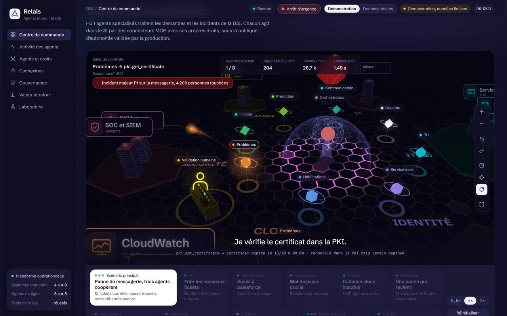

PROJET PHARE, PLATEFORME MULTI-AGENTS

python, aws serverless, multi-agents, gouvernance
Relais, plateforme d'agents IA pour la DSI
9 agents IA qui agissent dans le SI de l'entreprise (ITSM, annuaire, cloud, sécurité), sous contrôle humain. Conçu et développé de bout en bout.
- Validation humaine des actions sensibles
- Garde-fou anti-injection + arrêt d'urgence
- Chaque décision tracée et rejouable